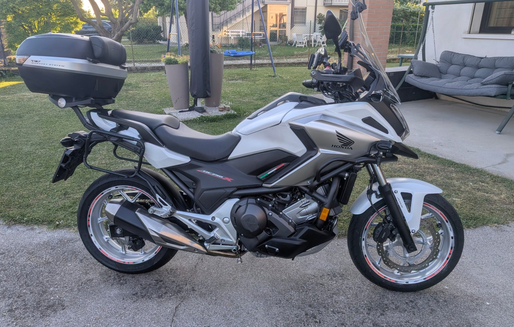
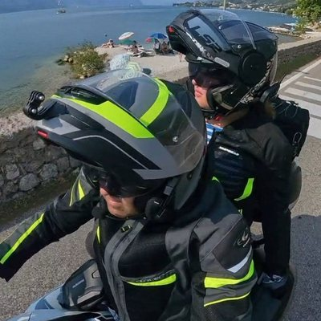

Itinerari in moto · Veneto
Il diario di bordo di due motociclisti improvvisati, ma con tanta voglia di vivere le due ruote. Ogni nostro viaggio diventa una guida strutturata per chi, come noi, parte all'avventura ma cerca un po' di organizzazione.
Percorsi collaudati, mappe dettagliate e tracce GPX pronte per il navigatore.
Storie, aneddoti, curiosità e consigli per non trascurare alcun dettaglio.
